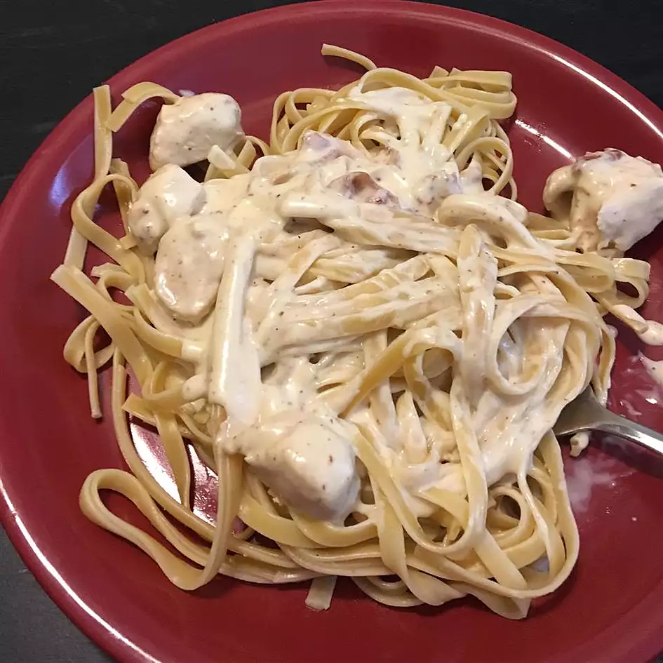

Chicken Alfredo
Homepage

Description
Chicken recipe made with Progresso Recipe Starters creamy Parmesan basil cooking sauce ad pasta. Only 20 minutes to prepare.
Ingredients
- 8 ounces uncooked fettuccine
- 1 (20 ounce) package boneless skinless chicken breasts, cut into 3/4-inch pieces
- 1 (9 ounce) pouch Progresso Recipe Starters creamt Parmesan basil cooking sauce
- 1/2 cup grated Parmesan cheese
Steps
Step 1:
- Cook and drain fettuccine as directed on package.
Step 2:
- In 12-inch skillet, heat 1 tablespoon vegetable oil over medium-high heat. Add chicken; sprinkle with 1/2 teaspoon salt and 1/4 teaspoon pepper. Cook 5 to 6 minutes, stirring frequently, until chicken is no longer pink in center. Add butter and garlic; cook until garlic is softened. Stir in cooking sauce, Parmesan cheese and cream. Simmer 5 to 8 minutes, stirring occasionally, until well blended.
Step 3:
- Serve over fettuccine.